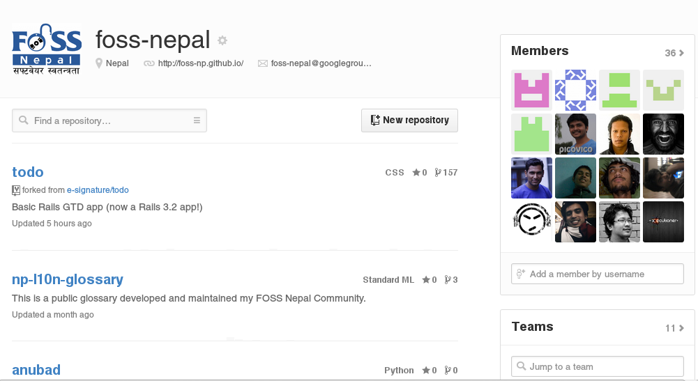

git(hub/
php-meet/*)?
not so basic »
Made using reveal.js
Default -
Sky -
Beige -
Simple -
Serif -
Night
Moon -
Simple -
Solarized
eGgfn]
open source, distributed version control system designed for speed and efficiency
¡ Kick Start «
Unix Based
MS Windows
Native - git from git-scm.com
Cygwin - mysysgit
s] tkfO{ ...
Code ug{'x'G5 M
Code for ...
Assignment > Job > Project > Fun
Problem…

- vf]h]sf] kfOPg
- e]6] klg #!@
- slt 7"nf]
- git df /x]5 .
SVN, CVS, Bazzar,
Mercurial, Bitkeeper
What is SCM?
before that…
Bit, small
Story of
Collaboration
Rise of the
Software Industries
Centralized Version Control
Diff & Patch
Internet
open-src chaos
Co-operation
without
Co-ordination
Mails
CODE Compiles
After applying patch
नै किन?
the Stupid Content Tracker
— creator

Distributed
Simple &
Fast»
Why i ♥ git
- dunno hg, svn, bzr...
- can blame others
- has gitbash
Getting Started…
First timer
where are git conf files
git configuration files are stored ~/.gitconfig
Configuration looks like
Git Configuration
its also true you can do diffrent in diffrent projectsgit*
*version 1.9.0
Basic Workflow
--distributed-even-if-your-workflow-isn't
- Edit Files
- Stage the changes
- Review your changes
- Commit the changes

git-repo free hosting
Assembla · BerliOS · Beanstalk · Bitbucket · CloudForge · CodePlex · CollabNet · GitHub · GitLab · GitPrep · Gitorious · GNU Savannah · Google Code · JavaForge · SourceForge · Visual Studio Online
github
Social Coding
Why github is cool!
foss-np
Git Vs. Others
Git का फाईदाहरु
- Works Offline
- Every clone is a backup
- Easy Branch/Merge
- Diff Storage
- Works Offline
- Every clone is a backup
- Easy Branch/Merge
- Diff Storage


Mystery of
checkout
git checkout
Checkout a branch or paths to the working tree
What does checkout do?
- reset file
- switch branch
- create branch
- ...
Release
Submodules
nested git
git-tag
mulitple remote
handeling multiple remoteswhat not to do!
git push -f
upload binary
upload large files
commit messages
> 80 words
git clone -r
git submodule init
git submodule update
git commit -am COMMIT_MSG
commit with message
git push origin --all

git add -u
Add all untracted files
git commit --orphan BRANCH
make the orphan branch
git clean -df
clean up untracked files
survival
shallow clone
git clone --depth=#
.git/config
issue list integration
git commit -m "fix #5"
time traveller

git environment
HEAD
origin
master
relative ref
28571874b75900573b0cdf750c9c77d261d29183
^*
~#
git commit --amend
git rebase -i [Commit ID]
Tips & Tricks
Custom Shell Prompt
github.com/git/git/master/contrib/completion/git-prompt.sh
gitk
git-cola

gist
gist.github.com
https://help.github.com/categories/23/articles
tig
ssh-keys
Also check
$ git bz
Bugzillia integration
for non-coders
- Act like you code
- get the latest version
Not just for git!
- has cat
- ssh client
- bash terminal (yeh! multi-processing)
- few linux commands
Still missing linux commands, install gnuwin32 packages
“After all GIT is just a tool!
Fool with the tool is still a Fool!”
Fool with the tool is still a Fool!”